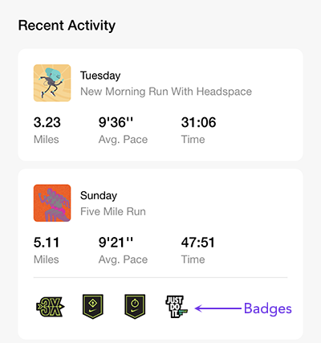

Runners of all levels, from beginner to advanced, can benefit from coaching. A good coach helps you improve your form and motivates you when your runs start to feel mundane and burdensome.
The Nike Run Club app is a free app with several useful features, including:
Personal running activity is tracked on the Activity tab. It includes recently completed runs and earned badges at a glance. Opening each running event reveals additional data such as calories, heart rate, elevation, and a route map.
The Plans tab offers training plans for all levels of runners, ranging from 4-week plans for beginners who are just starting out to 18-week plans for runners who are ready to tackle a full marathon.
The Run tab offers an extensive library of guided runs. These runs are grouped by theme and can be chosen according to time, distance, training goal, or motivational need. For example, the Get Started collection are time-based runs that help you explore different paces and ease you into running for longer distances. The Distance Based collection introduces you to a wide span of distances ranging from 1 mile to 5 kilometers all the way up to a full marathon. The Mindful Running collection is mostly time-based and includes motivational guidance to help you overcome a variety of mental hurdles.